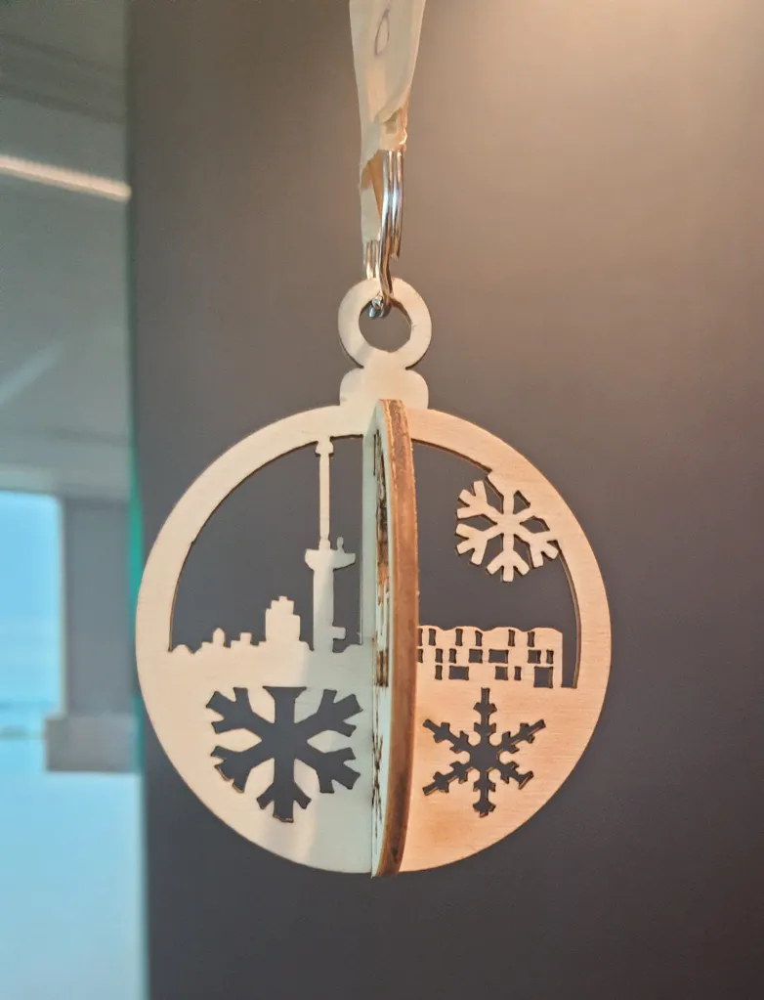
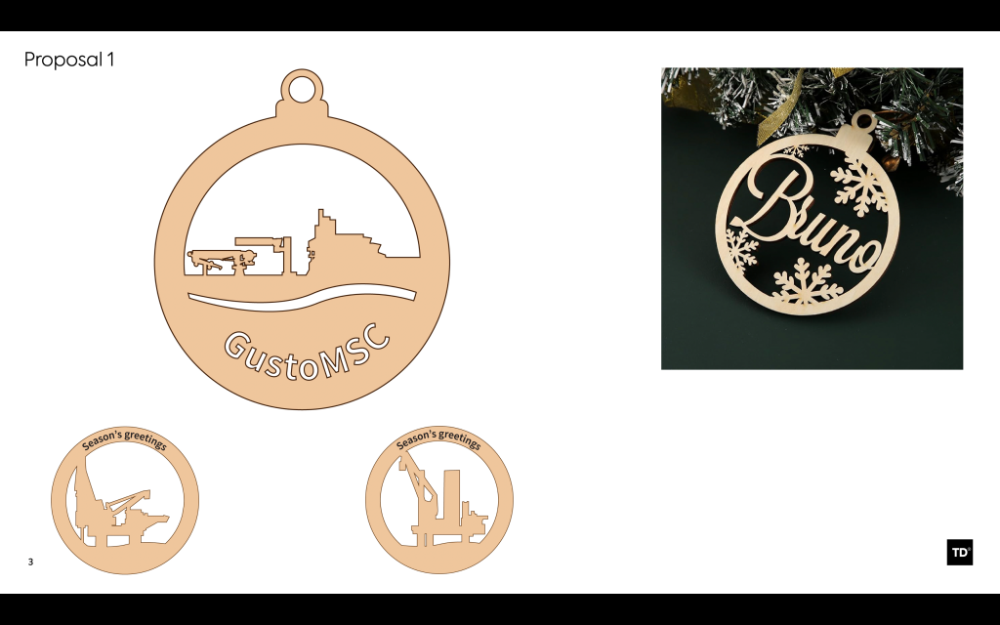
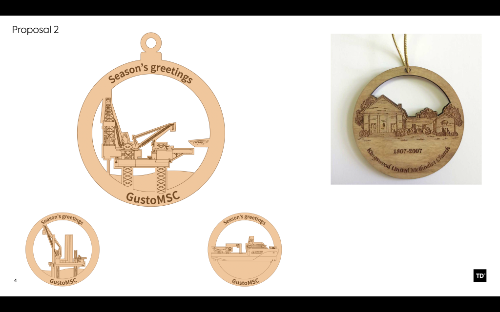
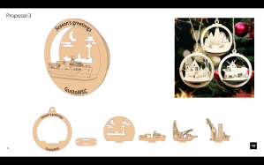
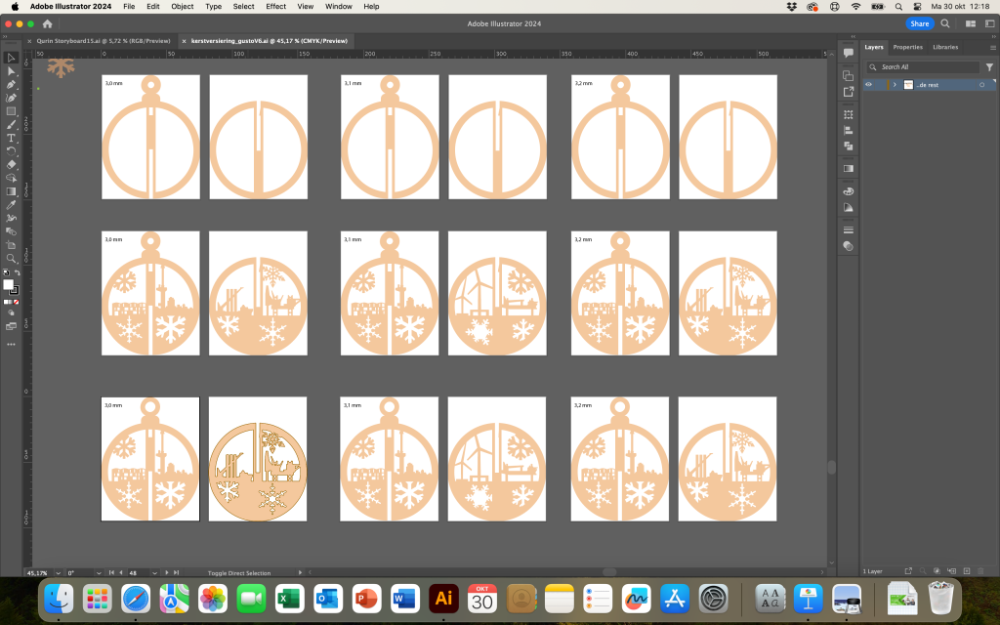
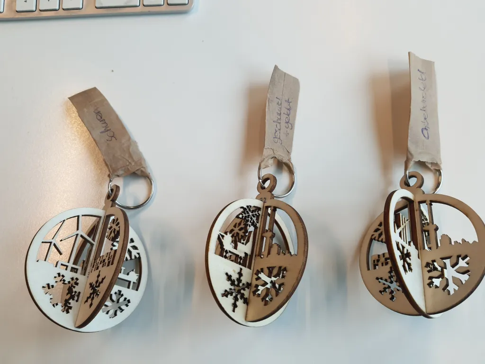
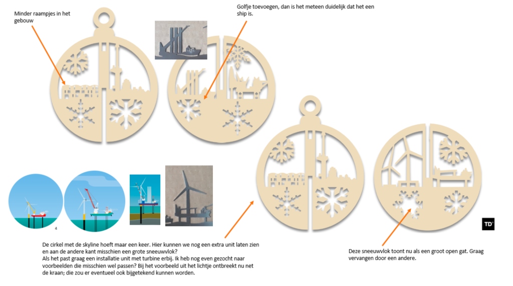

Product design
Kerstdecoratie product design
Mijn designs voor een lasergesneden kerstgeschenk
Mijn rol: Ontwerp, communicatie, oplevering








Product design
Mijn designs voor een lasergesneden kerstgeschenk
Mijn rol: Ontwerp, communicatie, oplevering






